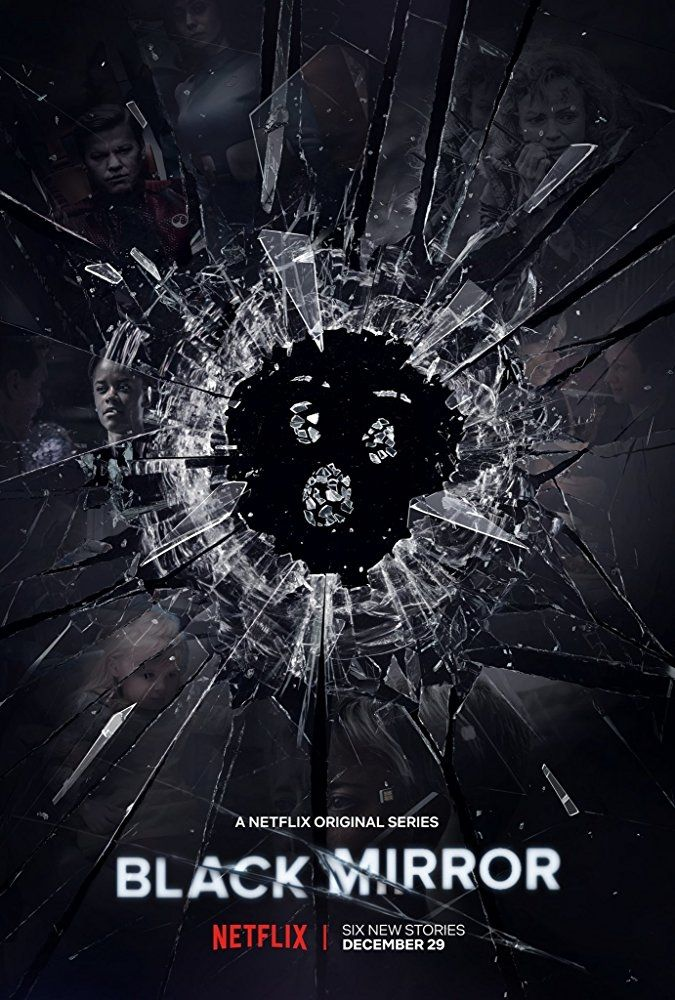

Thibaud DETONY- PUBLICIT-e

Damien DUBOSQUE - E-écologie

Jean DELEAGE - Opositif

Jules CREVOISIER- Ok, Terre

Zakaria CHIKI- Hack Pollution (H&P)

Hamza EL KANANI - Social Network Destruction
Sebastian CHEVALIER - Black digital

Natacha DEGUENON- EcoWeb

Benoit CLAUDE- E-State